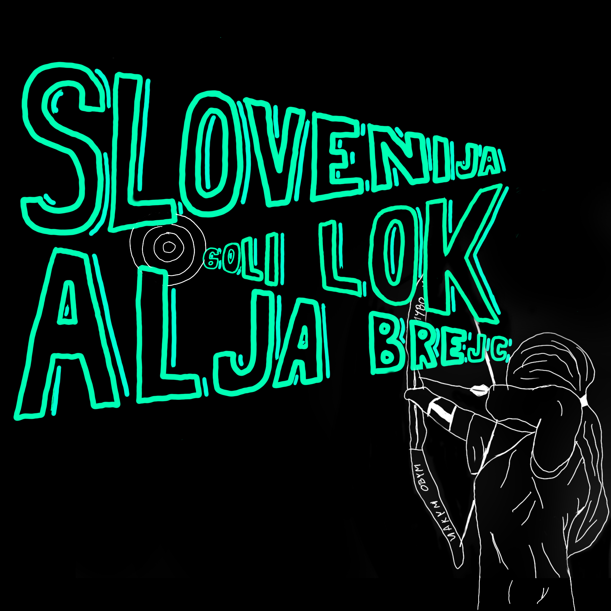

Lokostrelka | Računalnikarka | Ustvarjalka
Prihajam iz Begunj na Gorenjskem. Svojo izobraževalno pot sem začela na OŠ Frana Seleškega Finžgarja v Lescah, danes pa sem dijakinja Srednje tehniške šole Kranj, kjer se izobražujem v smeri računalnikar. Moje življenje je preplet tehnologije, umetnosti in vrhunskega športa. Moj kariera se je začela leta 2023
Risanje (oglje, grafika), fotografija, delo z računalnikom.
LK Šenčur & Lokostrelska Zveza Slovenije
Goli lok (Barebow) - U18 / Članice / U21
Z lokostrelstvom se ukvarjam tri leta, a moji cilji segajo daleč čez domače tarče. Moj cilj je zastopati Slovenijo na evropskih in svetovnih prvenstvih. Verjamem, da s trdim delom in pravo podporo lahko dosežem vrh. Moja športna karijera se je začela v GLK Tržiču, kjer sem bila kako leto in pol. Nato pa sem prestopila v LK Šenčur. Že od samega začetka streljam z golim lokom z katerim imam odlične rezulate.
| Vrsta tekmovanja | Rezultat |
|---|---|
| 3D | 445, po novih pravilih in daljših razadljah 286 |
| AH (Poljsko lokostrelstvo) | 275 |
| Dvorana | 444 |
| Zunanje tarčno | 504 |
| Šolsko notranje | 251 |
| Šolsko zunanje | 309 |
| PTL | 526 |
| 70/50m (tekmovanje kjer streljam na 50m) | 482 |
| Evropsko prenstvo 70/50 | 395 |
| 900 krogov (40m,30m, 20m) | 714 (z tem sem tudi naredila nov državni rekord) |
| Mladinsko tekmovanje 50/70m | 654 |
Iščem sponzorje in partnerje, ki bi mi pomagali na poti do mednarodnih tekmovanj.
Kontaktiraj me za sodelovanjev soboto 28.2.2026 je v Dragi v Begunjah na Gorenjskem potekalo tekmovanjem, na katerem sem dosegla 1 mesto in 488 točk
v soboto 14.3.2026 je v Šujici pri Dobravi potekalo 3D tekmovanje, mna katerem sem dosegla 1 mesto in 417 točk
v soboto 21.3.20216 je na Pongracu potekalo AH tekmovanje, na katerem sem dosegla 2 mesto z rezultatom 241 točk. Ob enem pa sem naredila svoj nov osebni rekord
v soboto 11.4.2026 je v Muti potekalo 3D tekmovanje, na katerem sem dosegla 1 mesto in 286 točk (prišla nova pravila in nove ter daljše razdalje).
v nedeljo 19.4.2026 je na Vrhniki potekalo 3D tekmkvanje, na katerem sem dosegla 1 mesto in 434 točk
v nedeljo 26.4.2026 je v Lendavi potekalo tarčno tekmovanje, 70/50m, na katerem sem dosegla 2 mesto in 395 točk, in na Srednje Evropskem tekmovanju sem bila 1 mesto, z 395 točkami
v nedeljo 3.5.2027 je v Snežniku potekalo 3D tekmivanje na katerem sem bila 1 mesto in 432 točk
v soboto 9.5.2026 je v Gornjem Gradacu potekalo AH tekmivanje kjer nisem le dosegla 1 mesta, temveč tudi svoj osebni rekord in skoraj državni rekord (274 točk)
v nedeljo 10.5.2026 je v Starem trgu pri Ložu potekalo šolsko podrošno tekmovanje, kjer sem dosegla 1 mesto in 309 točk (ekipno prav tako 1 mesto)
v soboto 16.5.2026 je v Šenčurju potekalo tekmovanje kjer nisem le dosegla 1 mesta ampak tudi moj rekord na tem tekmovanju (482 točk)
v soboto 23.5.2026 je v Postojni potekalo državno tekmovanje kjer sem dosegla 1 mesto z 714 točkami ter naredila nov državni rekord
v soboto 23.5.2026 je v Postojni potekalo državno tekmovanje kjer sem dosegla 1 mesto in 308 točk.
v soboto 13.6.2026 je v Gornjem Gradu potekalo AH tekmovanje, kjer sem dosegla 1 mesto in 219 točk.
v nedeljo 14.6.2026 je v Ankaranu potekal Mladinski pokal 50/70m, na katerem sem bila 1 mesto in 607 točk.
v soboto 20.6.2026 je v Mariboru potekalo tekmovanje 50/70m, na katerem sem bila 1 mesto z 427 točkami.
v soboto 27.6.2026 je v Turjaki potekalo 3D tekmovanje, kjer sem dosegla 1 mesto in 420 točk.
v nedeljo 28.6.2026 je v Ljubljana Stožice potekal zame zadnji Mldinski pokal 50/70m, kjer sem dosgla 1 mesto in 654 točk. Poleg te nagrade pa sem prejela še pokal za 1 mesto za tekmovanje najboljšega lokostrelca kategorije Goli Lok U18 moški in ženske.
v soboto 11.7.2026 je na Boču potekalo AH tekmovanje kjer sem dosegla 1 mesto z 234 točkami
v soboto 22.8.2026 jd v Logatcu potekalo 50/70m tekmovanje, ki je bil pravi izziv. Namreč tekmovalci smo tekmovali v dežju in megli. Kljub temu je bil rezultat dober. Bila sem 2 z 393 točkami.
v nedeljo 23.8.2026 je v Mokricah pitekalo 3D tekmovanje, kjer sem dosegla 1 mesto in 402 točk.
v soboto 29.8.2026 je v Kozarišču potekalo moje zadnje AH tekmovanje z Golim Lokom, kjer sem dosegla z 1.mestom ime državne prvakinje in 245 točk